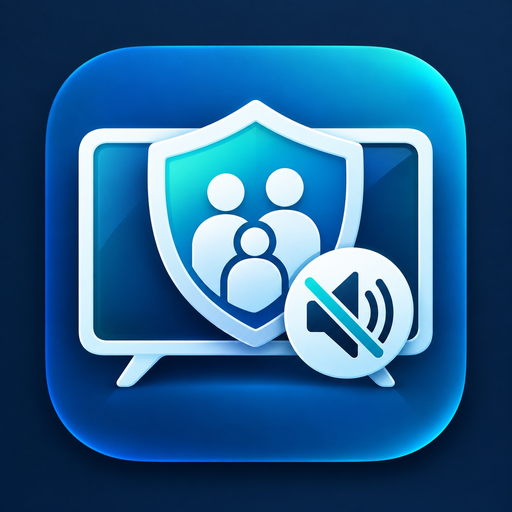

Watch it together on the TV, without the language.
FamilyFilterTV runs on the television itself — your Android TV or TV box. It plays what you start in Stremio and drops the sound for the few seconds a line is profane, and you set how strict it is from your phone.

Nothing is cut, blurred or skipped. The picture carries on and the sound comes straight back.
What it plays
FamilyFilterTV is the player, not the library. You start a film or an episode in Stremio the way you always do, hand it over, and FamilyFilterTV plays that same stream on the TV with the swearing muted.
- It plays what you start in Stremio. That is the one thing it takes over from.
- It does not open, unlock or filter subscription streaming apps. Those play inside their own players, and nothing else on the television can reach their sound.
- Filtering reads the subtitle track, so a title with no subtitles plays unfiltered — and the app says so on screen rather than pretending otherwise.
- It mutes swearing in speech. It does nothing about violence or nudity.
How it works
-
Put it on the television
Install FamilyFilterTV on your Android TV or TV box, and on your phone as well, then sign in with Google or an email address.
-
Link the TV from your phone
The TV shows a short code. Open FamilyFilterTV on your phone, tap Link a TV and type the code in.
-
Start watching
In Stremio, start a title and hand it to FamilyFilterTV as the player. Pick how strict the filter should be — off, mild, family or strict.
One filter for the whole house
The filter belongs to the household, not to the device. Set it once on your phone and every television linked to your account follows — the one in the lounge, the one in the spare room, the one the children are watching while you are in the kitchen.
- Choose off, mild, family or strict on your phone; the televisions pick it up.
- Link a television by typing in the short code it shows on screen. That is the whole setup.
- Three devices are included on one account, and you can add up to six.
- Nobody has to fetch a computer, cast anything, or change a setting on the TV itself.
What it costs
US$14.99 a year
- The first 14 days are free.
- Three devices on one account, and up to six if you need them.
- Android TVs, Android TV boxes and Android phones.
- Google Play shows and charges the price in your own currency.
Questions
What happens if a title has no subtitles?
Filtering reads the subtitle line to know when to mute, so a title with no subtitles plays unfiltered. FamilyFilterTV tells you on screen when that is the case.
Does it cut or skip anything?
No. Only the sound drops, and only for the length of that line.
Which devices does it run on?
The television itself — Android TVs and TV boxes — and Android phones. A few TV boxes don't offer the Play Store at all; install it directly on those.
What does it play?
What you start in Stremio. It's a player, not a library and not a way into any subscription streaming service.
Does it do anything about violence or nudity?
No. It mutes swearing in speech and nothing else. Nothing is blurred, cut or skipped.
Something isn't working.
Support has the setup steps, the known limits, and an address to write to.